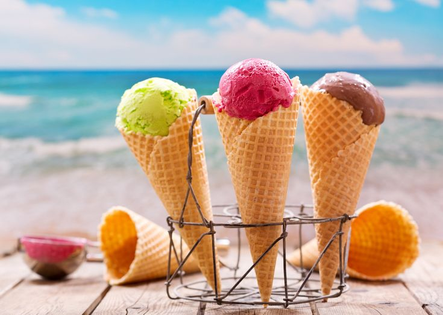
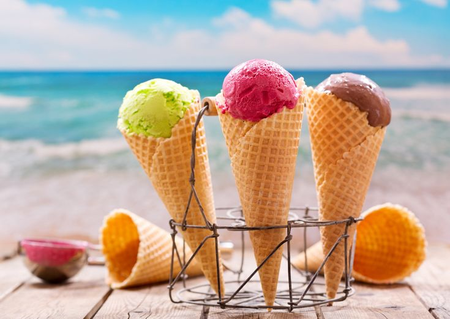
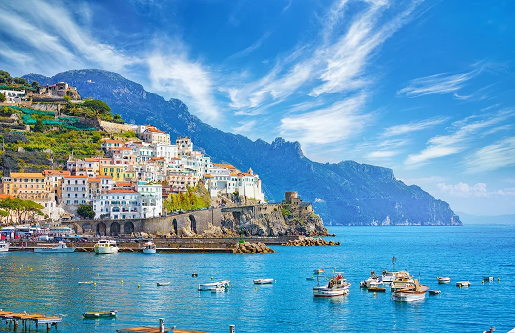
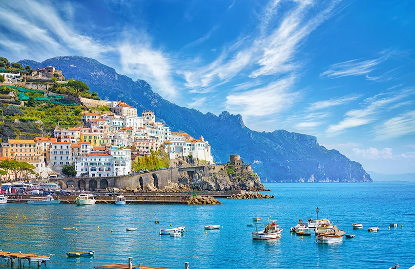

Summer food is all about freshness, hydration, and light flavors. During the hot season, people prefer foods that keep the body cool and energized, such as fruits, salads, smoothies, and cold beverages. Watermelon, mangoes, cucumbers, yogurt, and coconut water are popular summer choices. Street foods like ice creams, popsicles, and chilled desserts also become favorites. Healthy summer meals help prevent dehydration and provide essential nutrients while keeping digestion light.Summer food plays an important role in keeping the body cool and healthy during high temperatures. Seasonal fruits like berries, pineapples, oranges, and papayas are rich in water and vitamins, making them ideal for summer consumption. Light meals such as salads, sandwiches, and grilled vegetables are preferred over heavy or oily foods. Homemade drinks like lemon juice, buttermilk, and fruit juices help maintain hydration. Eating fresh and natural foods during summer improves energy levels and overall well-being. Another popular trend in summer food is street food and chilled desserts. Ice creams, kulfis, smoothies, and milkshakes are loved by people of all ages. Many cultures also prepare traditional summer dishes that help cool the body, such as curd-based meals and fermented drinks. These foods not only taste refreshing but also protect the body from heat-related issues.
By keerthi
Date:2-5-2026
 

Summer is the most popular season for travel as people take vacations to relax and explore new places. Beach destinations, hill stations, and countryside trips are especially loved during summer. Traveling in summer allows people to enjoy long days, outdoor sightseeing, and local festivals. Popular summer travel activities include swimming, trekking, sunset watching, and photography. A well-planned summer trip creates unforgettable memories and helps people escape daily routines.Summer travel gives people the opportunity to explore nature and relax from busy schedules. Many travelers prefer visiting beaches to enjoy sea breezes, sunsets, and water sports. Hill stations are also popular summer destinations because of their cool climate and scenic beauty. Traveling in summer allows families and friends to spend quality time together and create memorable experiences. Planning is very important for summer travel. Travelers often choose lightweight clothing, stay hydrated, and plan activities during early mornings or evenings to avoid extreme heat. Summer travel also introduces people to different cultures, cuisines, and traditions, making the journey both educational and enjoyable.
By Priya
Date:1-7-2026


Summer activities are all about fun, energy, and enjoying the outdoors. People spend more time outside doing activities like swimming, cycling, hiking, camping, and playing sports. Water-based activities such as surfing, boating, and water parks are very popular during summer. Even simple activities like evening walks, gardening, and family picnics bring joy during this season. Summer activities promote physical fitness and mental relaxation.Summer activities help people stay active and make the most of long daylight hours. Outdoor games like football, badminton, and cricket are commonly played during summer evenings. Adventure activities such as trekking, camping, and cycling allow people to connect with nature. These activities improve physical fitness and reduce stress. Indoor and creative activities are also popular during hot afternoons. Reading books, learning new skills, cooking summer recipes, and practicing hobbies keep people engaged. Group activities like family picnics, beach parties, and summer camps bring people together and strengthen social bonds. Summer activities add excitement and joy to everyday life.
By Anuhya
Date:2-9-2026